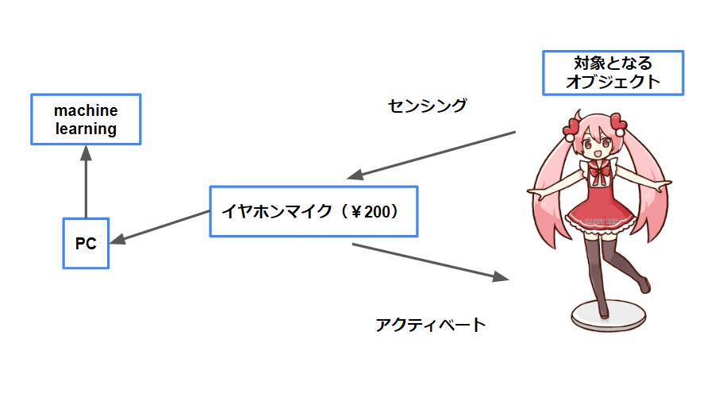

安価に再現するアクティブ音響認識
OverView
Onoらによるアクティブ音響認識技術（https://dl.acm.org/doi/10.1145/2501988.2501989）をより安価なハードウェア・システムで再現しました。超音波を流して、受け取るためのハードウェアは100円均一で入手可能なイヤホンマイクを分解して使用し、機械学習のためのソフトウェアはpython(scikit-learn)を用いています。
Image



Concept
Onoらによるアクティブ音響認識技術（https://dl.acm.org/doi/10.1145/2501988.2501989）はアクティブな音響（スピーカなど）をもちいてそれらをピエゾでピッキングし、オブジェクトの固有振動数の変化を機械学習させることで、身近な剛体オブジェクトをセンシングデバイスに変化させる技術です。これまで様々な研究がそのセンシング精度の向上や剛体以外のマテリアルにこの技術を適用してきた一方で、個人が再現することはやや困難でした。そのため、安価なハードウェアかつマイコンが不要な条件下でこの技術の再現を行いました。超音波および機械学習はpythonで行い、スピーカ・マイクとしてイヤホンマイク（100円均一で購入）を分解して使用することで、安価かつ簡単にアクティブ音響認識技術を用いることができます。これを用いてワークショップや機械学習センシングを行いたい方がより簡単かつ材料費がいらない形でモノづくりをおこなえる環境を提供することができると考えています。
Tools
- python(scikit-learn)：機械学習および超音波（高周波）のデジタル信号処理
- processing：スペクトラム描画や音響センシングの用途
Production Time
- 制作日時：2019年10月-2020年3月
- 製作期間：6ヶ月